CS TECH Ai Recognized by MJP for Jal Jeevan Mission Project Support
Recognition highlights CS TECH Ai’s project management consultancy contribution across regional water supply schemes in Amravati…
Read MoreNEWS & PUBLICATIONS
Recognition highlights CS TECH Ai’s project management consultancy contribution across regional water supply schemes in Amravati…
Read More
Landmark Contract for Land Information System Strengthens Global Presence
Read More
Advancing Urban Planning with Integrated GIS and 3D Spatial Technologies
Read More
Reinforcing Partnership Through Advanced Design and Manufacturing Solutions
Read More
22 March 2026 – It is with profound sadness that we mark the passing of Hon’ble Shri Dattaji Meghe, the visionary founder of the…
Read More
18 March 2026 – CS TECH Ai is proud to announce that it has been recognized as a Great Place To Work® Certified™ organization.…
Read More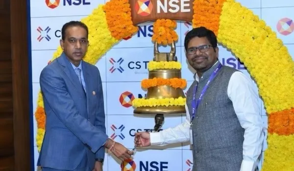
Chairman Highlights Decade of Growth and Shareholder Value
Read MoreAll India – January 27th, 2026: Tech Mahindra (NSE: TECHM), a leading global provider of technology consulting and digital…
Read More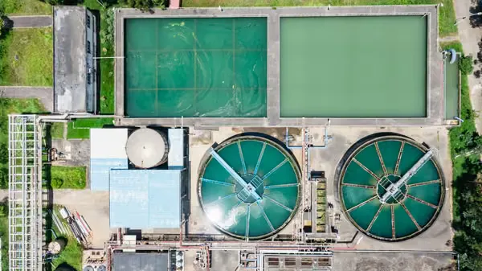
Strengthening Urban Infrastructure Through Expert Project Management
Read MoreDriving Data-Driven Infrastructure Planning and Advanced Project Visualization
Read More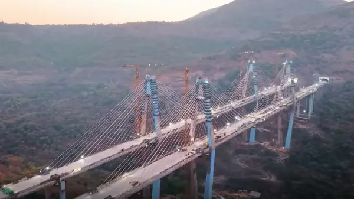
Continued Role in Advancing Smart Infrastructure for the Missing Link Project
Read More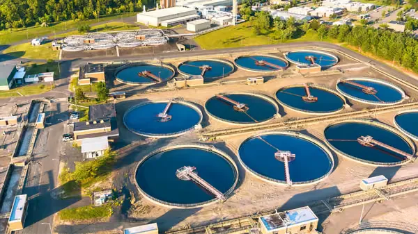
Continued Role in Quality Monitoring Across Key Clusters
Read MoreMumbai, India – 16th December 2025
Read More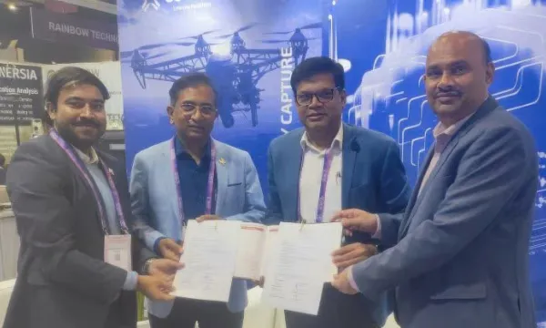
Delhi, India – December 5, 2025
Read MoreStrengthening Contribution to National Soil Mapping Programme in Maharashtra
Read More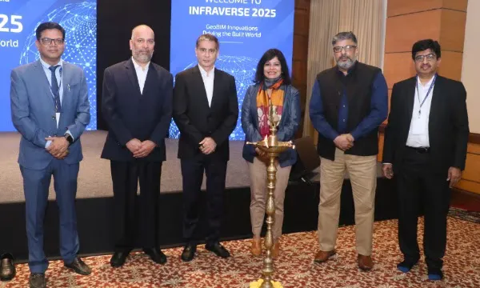
Mumbai, India – 21st November 2025
Read More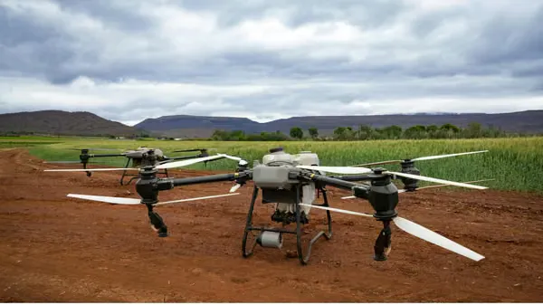
Strengthening Geospatial and Soil Survey Capabilities Under the National Soil Mapping Programme
Read More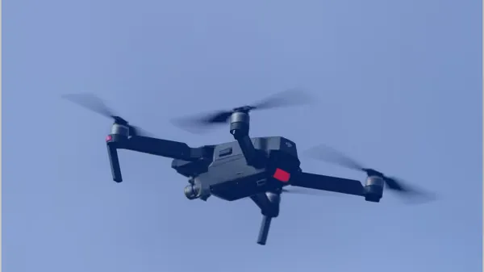
Project Under National Soil Mapping Programme to Support Scientific Land and Agricultural Planning
Read More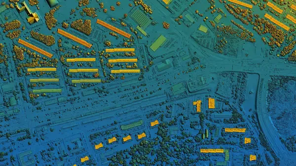
Project to Strengthen Geospatial Infrastructure and Digital Planning Capabilities Across the Mumbai Metropolitan Region
Read MorePune, India – 5th September 2025
Read More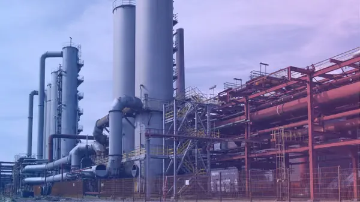
Project Strengthens Digital Collaboration and Data Management Across Energy and Cement Businesses
Read More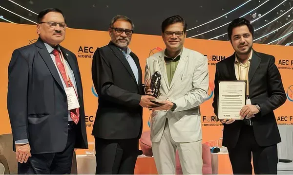
A key milestone as the company gets recognized across forums while it continues to deliver strong revenue growth
Read More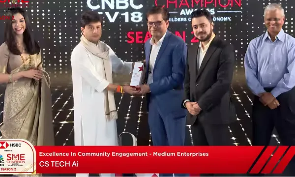
New Delhi, July 25: CS TECH Ai has been conferred the ‘Excellence in Community Engagement’ honour at the CNBC-TV18 SME Champion…
Read More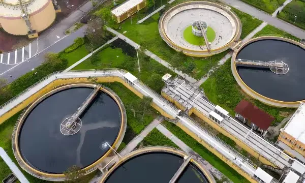
Nagpur, India – July 2025
Read More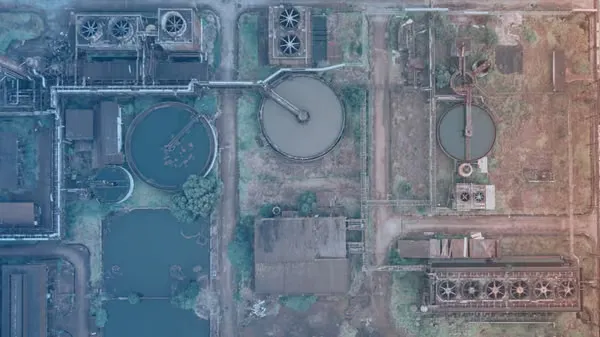
Project Aims to Support Pollution Control and Sustainable River Management in the Godavari Basin
Read MoreAll India – BSE listed tech firm CS TECH Ai (Legal Name: Ceinsys Tech Ltd) has received a Letter of Award (LoA) from the Mumbai…
Read More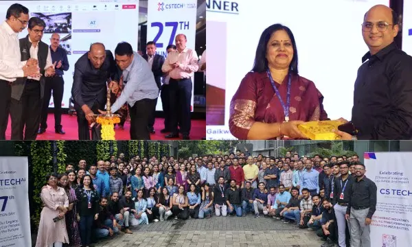
At a time when infrastructure is being redefined by data, automation, and intelligence, CS TECH Ai (BSE: Ceinsys) stands at the…
Read More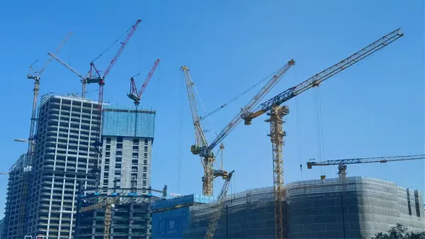
Project to Enhance Digital Design and Engineering Capabilities for Infrastructure Development
Read More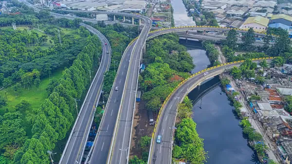
Consultancy Assignment to Support Urban Sanitation and Wastewater Infrastructure Development
Read More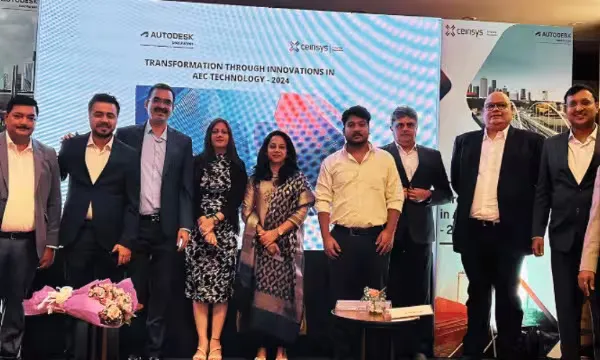
Mumbai, October 25, 2024 – CS TECH Ai, a leader in geospatial and engineering solutions, in partnership with Autodesk, proudly…
Read MoreCS TECH Ai (Ceinsys Tech Ltd, BSE CODE: 538734) has received a Letter of Award (LOA) from State Water and Sanitation mission…
Read More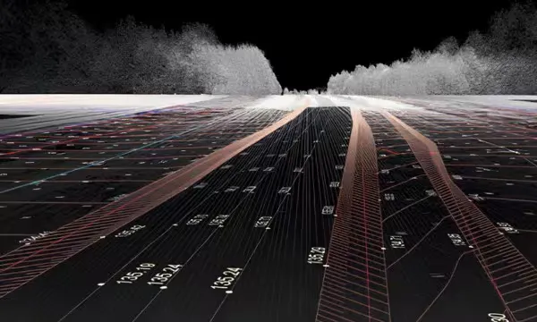
Nagpur, Maharashtra, India, 21 February, 2024 – CS TECH Ai (Ceinsys Tech Ltd), a pioneer in providing Geospatial, IT, Engineering…
Read MoreNagpur, Maharashtra, India, 4 December, 2023 – CS TECH Ai (Ceinsys Tech Ltd), a pioneer in providing Geospatial, IT, Engineering…
Read More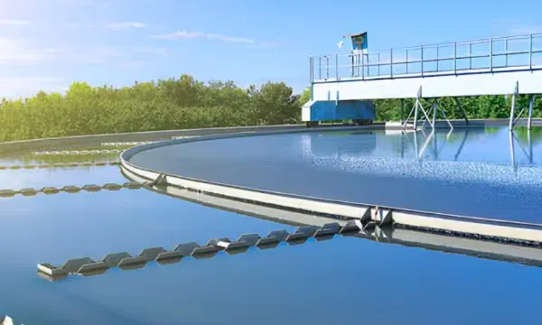
Nagpur, Maharashtra, India, 30 November, 2023 – CS TECH Ai (Ceinsys Tech Ltd), a pioneer in providing Geospatial, IT, Engineering…
Read MoreNagpur, Maharashtra, India, 22 November, 2023 – CS TECH Ai (Ceinsys Tech Ltd), a pioneer in providing Geospatial, IT, Engineering…
Read More